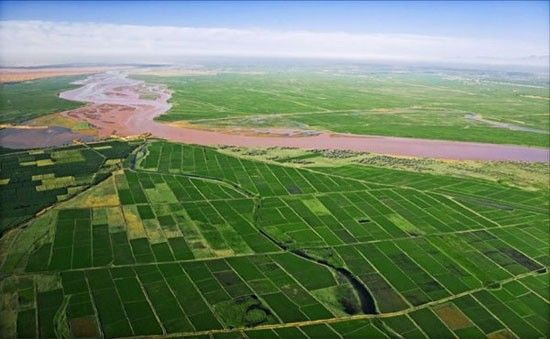

morly旅游网
一说宁夏，你肯定想到了梁静茹的宁夏，安逸舒适的风景，想过去美丽的宁夏吗？
宁夏是中华文明的发祥地之一，位于"丝绸之路"上，历史上曾是东西部交通贸易的重要通道，作为黄河流经的地区，这里同样有古老悠久的黄河文明。
早在三万年前，宁夏就已有了人类生息的痕迹，公元1038年，党项族的首领李元昊在此建立了西夏王朝，并形成了西夏文化。古今素有"塞上江南"之美誉。
宁夏回族自治区，位于北纬35°14~39°23，东经104°17～107°39之间。宁夏疆域轮廓南北长、东西短。南北相距约456公里（北起石嘴山市头道坎北2公里的黄河江心，南迄泾源县六盘山的中嘴梁），东西相距约250公里（西起中卫营盘水车站西南10公里的田涝坝，东到盐池县柳树梁北东2公里处），总面积为6.6万多平方千米。
六盘山风景区
六盘山国家自然保护区位于宁夏南部，这里是北方游牧文化与中原文化的结合部，文化古迹较多，自然资源丰富。
西夏王陵
西夏王陵国家AAAA景区，位于银川市西夏区，是中国现存最密集的帝王陵区，被世人称为“东方金字塔”。分布着九座帝王陵和140 多座王公大臣的殉葬墓。
中卫沙坡头
中卫沙坡头是国家首批AAAAA景区，位于中卫市沙坡头区腾格里沙漠腹地，是一处富有浓郁西部特色的著名沙漠旅游区。
中卫金沙岛休闲度假区
宁夏中卫金沙岛休闲度假区位于中国第四大沙漠——腾格里沙漠东南缘，与腾格里湖交相辉映，距市区17公里，距中国首批5A级景区沙坡头20公里，距中卫香山机场7公里，总占地面积4284亩，是沙坡头旅游有限公司投资近1亿多元，精心打造的集餐饮、住宿、休闲、娱乐为一体的西北首家高端休闲度假别墅区.
宁夏回族自治区深居西北内陆高原，属典型的大陆性半湿润半干旱气候，雨季多集中在6—9月，具有冬寒长，夏暑短，雨雪稀少，气候干燥，风大沙多，南寒北暖等特点。由于宁夏平均海拔在1000米以上，所以夏季基本没有酷暑；1月平均气温在零下8℃以下，极端低温在零下22℃以下。
宁夏气候的最显著特征是：气温日差大，日照时间长，太阳辐射强，大部分地区昼夜温差一般可达12—15℃。 全年平均气温在5－9℃之间，引黄灌区和固原地区分别为全区高温区和低温区。
内容整理至网络，如有侵权，请联系我们！1255394075@qq.com